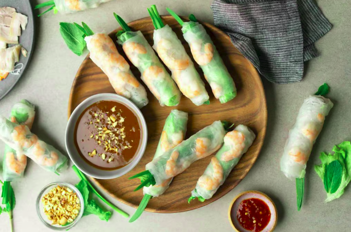

Vietnamese Spring Rolls

Delicious, refreshing spring rolls with peanut sauce for dipping.
This recipe for Vietnamese Spring Rolls features a delightful combination of tender pork belly, shrimp, fresh vegetables, and rice noodles, all wrapped in delicate rice paper. The pork is boiled with onion, salt, and sugar until tender, while the shrimp is briefly cooked until just opaque. Fresh lettuce, mint, and chives add a crisp, refreshing element. The rolls are served with a rich peanut dipping sauce made from hoisin sauce, peanut butter, and garlic, with optional sambal chile paste for added heat. These rolls offer a refreshing and flavorful bite, perfect as an appetizer or light meal.
Ingredients
Pork:
- 1/2 lb (226.8 g) pork belly
- 1 medium onion, halved
- 1 teaspoons sugar
- 1 teaspoons salt
Shrimp:
- 1/2 lb (226.8 g) shrimp
- 1/4 teaspoon salt
Veggies and other ingredients:
- 1 head green leaf lettuce
- 1/2 bunch mint
- 1/2 bunch chives
- 1/2 pack dried spring roll wrapper
- 1/3 pack dried rice noodles or dried bánh hỏi
Peanut dipping sauce:
- 2 tablespoons oil
- 2 tablespoons minced garlic
- 8 tablespoons hoison sauce
- 2-3 tablespoons peanut butter
- 1/2 cup water
- Sambal chile paste to taste, optional
Steps to Create the Dish
- Cooking Pork:
- Add pork, onion, salt and sugar to a small pot and add enough water to cover about 1 inch above the pork. Bring to a boil on high heat and then lower to medium and cook for about 25-30 minutes or until pork juices run clear when poked at the thickest part, or it registers 145 F with an instant read thermometer at the thickest part.
- Cover the pork in a bowl as it cools so it doesn't darken. Once cool, slice the pork as thinly as you can to make rolling easier later.
- Cooking Shrimp:
- Defrost shrimp in water bowl. Once defrosted, de-vein the shrimp. Hold a shrimp up to a light to locate the vein, pierce the whiter part (joint) of the shrimp just below the vein with a toothpick, and pull the toothpick upwards towards the shrimp back. Do this slowly to remove the vein. Piece again at another joint if the vein breaks to remove all traces of vein. Repeat with all your shrimp.
- Cook the shrimp: add shrimp, salt, and enough water in a small pot to barely cover your shrimp. Boil on medium-high heat for only about 1.5 to 2.5 minutes or until the shrimp is no longer translucent. Drain and run under cold water to stop the cooking process.
- Remove the shells and tails from shrimp, and cut the shrimp in half along the body.
- Rice Noodles:
- Cook either your rice noodles according to the package instructions. Timing can vary wildly depending on noodle thickness and brand. This can be anywhere from 2 to 10 minutes. Drain and cool the noodles under cold, running water to stop it from cooking further.
- Veggies:
- Prepare your vegetables by rinsing and drying them.
- Spring Roll Wrapping:
- Add warm water to a plate and soak the rice paper sheet for about 5-10 seconds. Soak the rice paper just enough so that it is pliable and easy to handle, but remove the sheet before it gets too soft and sticky. Lay rice paper on a plate and begin to assemble your roll.
- Add lettuce towards the bottom of the rice paper. Leave 1 to 1½ inches of space on either side of the rice paper. Layer with mint and chives. Try to not add too many items because it will be harder to roll and might tear your rice paper.
- Add shrimp in the middle of the rice paper with the orange skin facing down.
- Layer the sliced pork on top of the shrimp.
- Add the noodles across the vegetables, spread evenly across.
- Fold the left and right sides towards the middle so that it's snug. Lay some chives lengthwise with one end poking out. Then fold the bottom up to cover the noodles. You want to keep the roll tight, so lightly squeeze it together as you roll. Continue to roll upwards to complete the spring roll.
- Peanut Dipping Sauce:
- In a pan over medium heat, saute garlic in oil until fragrant.
- Add in hoisin sauce, peanut butter, and water and mix thoroughly.
- Bring to boil, and then immediately turn off the heat and pour into a heat safe dipping bowl. The sauce will slightly thicken as it cools.
- Sprinkle ground peanuts on each sauce dipping bowl, and leave the chile paste on the side so others can add to their own dipping bowl as desired.
Return to home